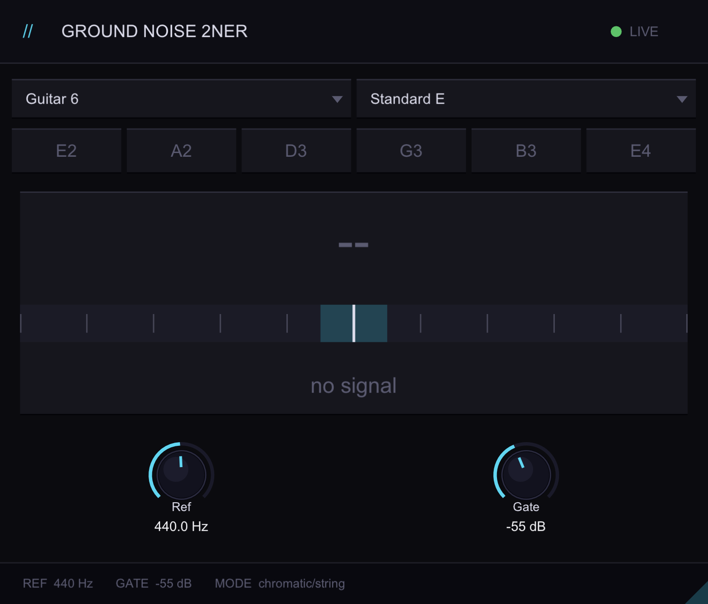

Ground Noise
TUNER PLUGIN / QUICK CHECK
Simple tuner.
2ner gives you a clear pitch readout without taking over the session. Open it, tune, and move on.

Features
- Tune in real time
- Choose from multiple tunings
- See the note and cents clearly
- Track pitch without a jumpy display
- See sharp and flat indication at a glance
- Adjust the reference pitch
- Mute the signal while tuning
- Use it with guitar or bass
- Keep CPU use low